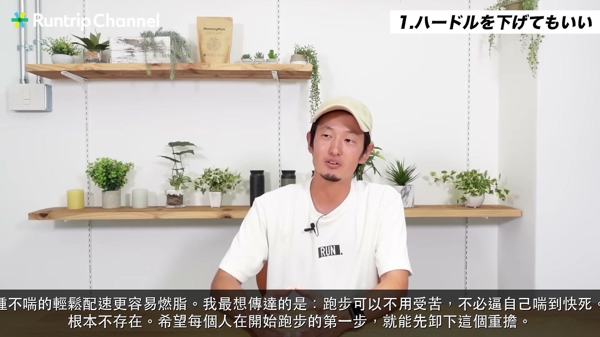
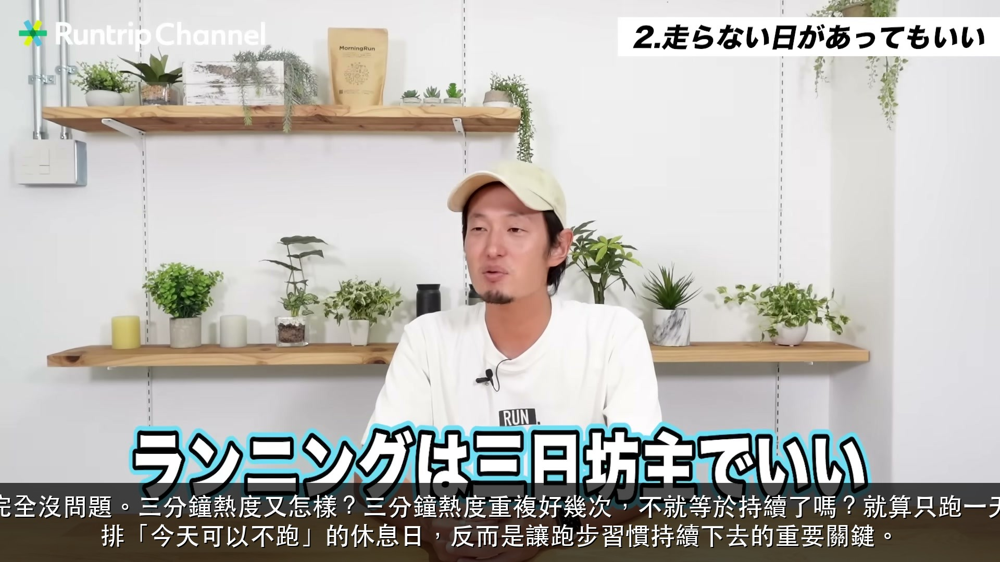
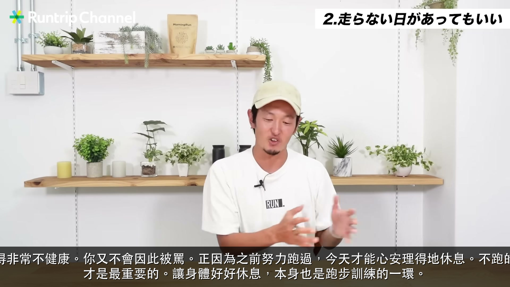
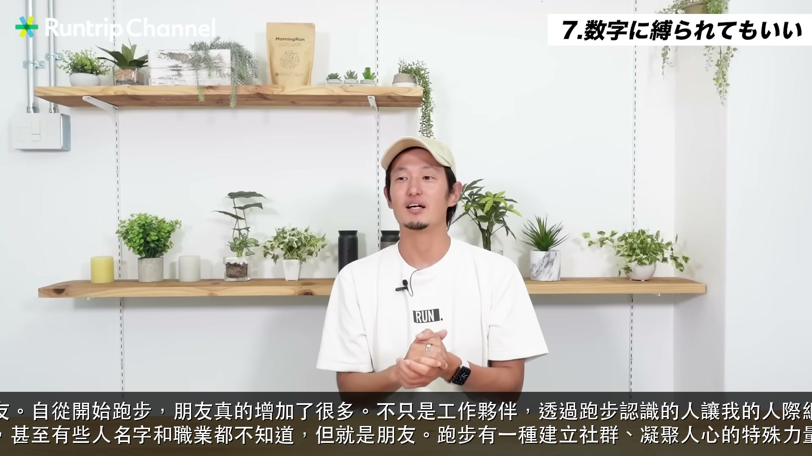

初學者必看！跑步第一年希望早知道的9件事——如何樂在跑步並養成習慣
▶ 觀看原影片（日語）
· 13 句金句 · 日語 → 繁體中文
⏱ 01:44
我在開始跑步前最希望知道的第一件事，就是可以降低門檻。一提到跑步，大家都覺得一定要喘到氣喘吁吁才算數，不吃苦不行的固定觀念。但實際上，如何跑得不那麼喘，反而是持續跑步、開始跑步最重要的關鍵。不必逼自己，這才是正確的起跑方式。

⏱ 02:30
如果你是為了減肥而跑步，恰恰是那種不喘的輕鬆配速更容易燃脂。我最想傳達的是：跑步可以不用受苦，不必逼自己喘到快死。那種「一定要做到什麼」的強迫觀念根本不存在。希望每個人在開始跑步的第一步，就能先卸下這個重擔。

⏱ 03:45
第二件事是：刻意安排不跑的日子也完全沒問題。三分鐘熱度又怎樣？三分鐘熱度重複好幾次，不就等於持續了嗎？就算只跑一天也好，一週一次也行。主動為自己安排「今天可以不跑」的休息日，反而是讓跑步習慣持續下去的重要關鍵。

⏱ 05:00
帶著罪惡感度過不跑步的日子，我覺得非常不健康。你又不會因此被罵。正因為之前努力跑過，今天才能心安理得地休息。不跑的日子也可以過得很開心，不帶罪惡感才是最重要的。讓身體好好休息，本身也是跑步訓練的一環。
⏱ 06:25
第三件事是：從外形入手完全沒問題。買一雙讓心情大好的跑鞋或者運動服，就是想出門的動力。跑鞋買回來打開盒子那一瞬間，那種興奮感你一定懂吧？從裝備入手，讓自己想踏出門，這是非常合理的開始方式，完全不用覺得不好意思。
⏱ 07:30
第四件事與第三件相反：不從外形入手也完全沒問題。沒有跑鞋就不能跑嗎？不是的。穿體育課的運動服去跑有什麼問題嗎？完全沒有。穿棉T也可以跑。如果因為在意裝備這件事而遲遲無法開始，那更要告訴你：根本不用在意，直接去跑就對了。
⏱ 08:30
第五件事是：跑陌生的路，意外地很有趣。出差或旅行時，在不熟悉的街道早上跑個5公里30分鐘，就能獲得非常豐富的體驗，跑步會因此變得更有趣。其實就算在自家附近，也有很多平時走路不會去的小巷子。試著出門後右轉而不是照常左轉，光是這樣，就可能迎來意想不到的跑步樂趣。
⏱ 10:35
第六件事是：完全可以無視數字。用自己覺得舒服的配速跑就足夠了。可以走路，也沒有必須跑幾公里的規定。別人跑多快、跑多遠是別人的事，不代表你也必須達到那個標準。用自己的節奏享受跑步，這才是最重要的。這是我最想告訴從前的自己的一句話。
⏱ 11:28
話雖如此，被數字束縛也可以很有趣。我自己曾完成所謂的「Sub 3」，也就是全馬3小時內完賽，這是全體跑者中前約3%的成績。在追求這個目標的過程中，可以用數字清楚感受到自己在進步、在成長，那種感覺真的很棒。能夠享受追數字的樂趣，並把它當成人生的興趣之一，我覺得非常值得。
⏱ 12:30
追數字和無視數字，並沒有誰對誰錯，兩者都是享受跑步的重要選項。如果現在的自己覺得追求進步很有趣，就專注在那上面。但當你開始感到疲憊或不對勁，從數字中解放出來，反而會看到不同的世界。在這兩種狀態之間靈活切換，我認為才是最重要的跑步心態。

⏱ 13:10
第八件事是：跑步會讓你交到更多朋友。自從開始跑步，朋友真的增加了很多。不只是工作夥伴，透過跑步認識的人讓我的人際網絡大幅拓展，在很多地方都交到了朋友，甚至有些人名字和職業都不知道，但就是朋友。跑步有一種建立社群、凝聚人心的特殊力量。
⏱ 15:00
第九件事，也是最重要的一件：跑步會改變你的人生。我自己開始跑步之後，真的覺得人生變了。變化最明顯的不是身體而是心理：變得超級正向、不再抱怨、創意靈感源源不斷、行動力大增、朋友增加，眼前的迷霧漸漸散去，人生整體變得越來越明亮。
⏱ 16:20
如果一開始就知道跑步能改變人生，我一定更早開始。但現在回頭看，也很慶幸那時候開始了。希望未來能讓更多人不再覺得跑步是一件辛苦、困難的事，讓跑步變得更貼近生活，這也是我們 RUNTRIP 所追求的願景。